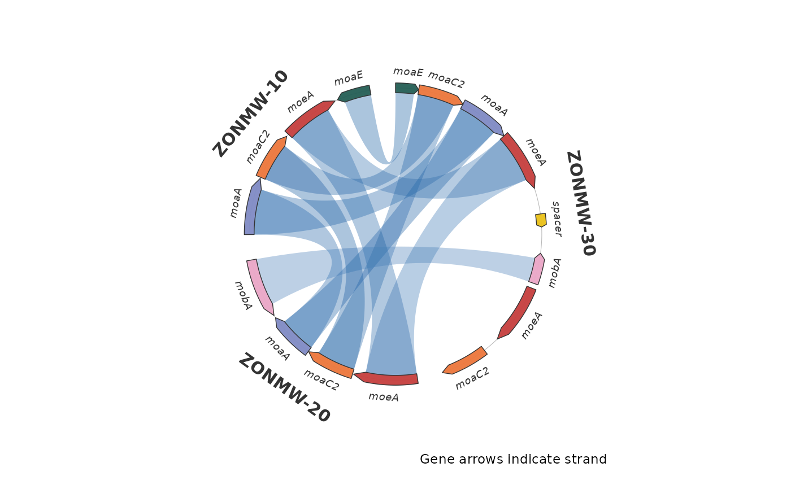

Plot gene-level synteny around a circle
Source:R/plot_circular_microsynteny.R
plot_circular_microsynteny.RdDraw strand-aware curved gene arrows on contig arcs, grouped by genome/bin,
with homology ribbons inside the circle. Uses ordinary ggplot2 layers and
the same feature/link tables as plot_microsynteny().
Usage
plot_circular_microsynteny(
features,
links,
bin_order = NULL,
palette = NULL,
gene_fill = "per_name",
gene_palette = NULL,
gene_color = "#333333",
gene_alpha = 0.95,
ribbon_fill = "identity",
ribbon_palette = NULL,
ribbon_alpha = 0.35,
ribbon_anchor = "body",
identity_low = "#DCEEFF",
identity_high = "#08519C",
gap = 2,
group_gap = 10,
start_angle = 90,
clockwise = TRUE,
curvature = 0.65,
track_width = 0.065,
arrowhead_frac = 0.18,
label_genes = TRUE,
label_size = 2.5,
bin_label_size = 4,
interactive = FALSE,
title = NULL
)Arguments
- features
Data frame with
bin_id,seq_id,start,end,strand("+"or"-"), uniquefeat_id, andnamecolumns.- links
Data frame with
feat_id_a,feat_id_b, and optional percentidentity(0 to 100;NAmeans unknown). Empty links are supported.- bin_order
Bins in circular display order. Defaults to first appearance in
features; may select a subset. Links to excluded bins are omitted.- palette
Built-in ltc name, HCL palette name,
"Okabe-Ito", or color vector for genes and categorical ribbons. Identity keeps the default blue ramp unlessribbon_paletteis supplied explicitly.- gene_fill
Gene coloring:
"per_name","per_feat", or"uniform".- gene_palette
Overrides
palette; named vectors map gene names or IDs.- gene_color
Gene outline color.
- gene_alpha
Gene opacity, between 0 and 1.
- ribbon_fill
Ribbon coloring:
"identity","per_name", or"uniform".- ribbon_palette
Overrides the categorical palette or sets an identity color ramp. Named mappings are supported for per-name ribbons.
- ribbon_alpha
Ribbon opacity, between 0 and 1.
- ribbon_anchor
"body"keeps arrowheads clear;"full"spans the complete gene interval.- identity_low, identity_high
Colors at 0 and 100 percent identity when no explicit ribbon palette is supplied.
- gap
Gap between contigs within a bin, in degrees.
- group_gap
Gap between bins, in degrees.
- start_angle
First sector's starting angle in degrees; 90 is top.
- clockwise
Draw increasing genomic coordinates clockwise?
- curvature
Pull of ribbon control points toward the center (0 to 1).
- track_width
Radial thickness of the gene arrows; outer radius is 1.
- arrowhead_frac
Fraction of gene length used for the arrowhead (0 to 0.5), capped at 6 degrees to keep very long arrows readable.
- label_genes
Show gene names outside the ring?
- label_size
Gene label size in mm.
- bin_label_size
Bin label size in mm. Set to 0 to hide labels.
- interactive
Build ggiraph layers for rendering with
syn_girafe()?- title
Optional title.
Value
A ggplot object whose data contains the contig layout. Attributes
circular_features and circular_links contain displayed features and links
with angular coordinates in radians.
Details
Each contig spans its first feature start through its last feature end; unannotated flanks are not inferred. Arc widths are proportional to these observed spans across bins, using a shared coordinate unit. The circular presentation does not imply biologically circular sequences. Features that cross a circular genome origin must be split before plotting.
Gene strand controls arrow direction. Ribbons represent homology between intervals, not alignment orientation; no inversion is inferred from strand. Links can connect any displayed bins or contigs, including the same bin. Unknown feature identifiers, duplicate feature IDs and invalid intervals are rejected to avoid ambiguous links.
Examples
micro <- demo_microsynteny_data()
p <- plot_circular_microsynteny(micro$features, micro$links,
palette = "casa_natal")
p + ggplot2::labs(caption = "Gene arrows indicate strand")
